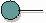

| Artefacto: Interfaz |
|  |
|
| Descripción principal | Una interfaz es un elemento de modelo que define un conjunto de comportamientos (un conjunto de operaciones) ofrecidos por el elemento de modelo clasificador (específicamente, una clase, subsistema o componente). Un clasificador puede realizar una o más interfaces. Una interfaz puede realizarse con uno o más clasificadores. Cualquier clasificador que realice las mismas interfaces se puede sustituir por otro en el sistema. Cada interfaz debe proporcionar un único y bien definido conjunto de operaciones. |
|---|
| Opciones de representación | Representación UML: Interfaz
Las interfaces normalmente se utilizan juntamente con Producto de trabajo: Subsistema de diseño; normalmente no es necesario ni deseable utilizar interfaces juntamente con Producto de trabajo: Clases de diseño, en que normalmente es suficiente utilizar operaciones públicas. Las interfaces generalmente se utilizan en casos en los que hay una necesidad de definir el comportamiento (en forma de firmas de operación) independientemente de los elementos que realizan dichas operaciones. Implica la existencia de abstracciones de comportamiento o sustituibilidad de mayor granularidad, modeladas como subsistemas de diseño. En el caso de proyectos que no tiene estos atributos, las interfaces se pueden omitir. |
|---|
| Directrices |
|---|
© Copyright IBM Corp. 1987, 2006. Reservados todos los derechos. |